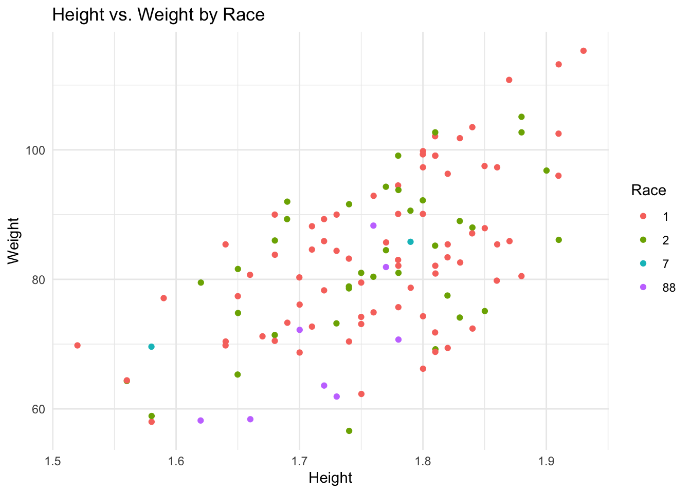

library(tidymodels)
library(tidyverse)
library(ggplot2)
library(GGally)
library(corrplot)
library(glmnet)
library(ranger)
library(yardstick)
library(here)Machine Learning Models Exercise
Introductory Processes
Loading required packages
Defining a random number seed
rngseed = 1234Loading the data
# Specify the path to your RDS file
rds_file <- "/Users/emmahardinparker/Desktop/BIOS8060E/emmahardinparker-MADA-portfolio/ml-models-exercise/data_with_race.rds"
# Use readRDS() to load the data from the RDS file
race_data <- readRDS(here(rds_file))Futher Processing
The RACE variable in this data set is coded arbitrarily. I am going to attempt to find out what the codes 88 and 7 represent in this dataset.
# Visualizing count data of the RACE variable
countplot <- ggplot(race_data, aes(x = RACE)) + geom_bar()
print(countplot)Now that I have confirmed that codes 88 and 7 have the fewest observations in the data, I want to see if any other data metric is useful in determining the codes.
# 88
eightyeight <- race_data %>%
filter(RACE == "88")
summary(eightyeight) Y DOSE AGE SEX RACE WT
Min. :1732 Min. :25.00 Min. :20.00 1:7 1 :0 Min. :58.20
1st Qu.:1986 1st Qu.:25.00 1st Qu.:23.25 2:1 2 :0 1st Qu.:61.02
Median :2135 Median :25.00 Median :25.00 7 :0 Median :67.15
Mean :2547 Mean :34.38 Mean :26.38 88:8 Mean :69.40
3rd Qu.:2908 3rd Qu.:50.00 3rd Qu.:27.25 3rd Qu.:74.62
Max. :4452 Max. :50.00 Max. :39.00 Max. :88.30
HT
Min. :1.620
1st Qu.:1.690
Median :1.725
Mean :1.718
3rd Qu.:1.762
Max. :1.780 # 7
seven <- race_data %>%
filter(RACE == "7")
summary(seven) Y DOSE AGE SEX RACE WT
Min. :1491 Min. :25.00 Min. :41 1:1 1 :0 Min. :69.60
1st Qu.:1816 1st Qu.:31.25 1st Qu.:43 2:1 2 :0 1st Qu.:73.65
Median :2140 Median :37.50 Median :45 7 :2 Median :77.70
Mean :2140 Mean :37.50 Mean :45 88:0 Mean :77.70
3rd Qu.:2465 3rd Qu.:43.75 3rd Qu.:47 3rd Qu.:81.75
Max. :2790 Max. :50.00 Max. :49 Max. :85.80
HT
Min. :1.580
1st Qu.:1.632
Median :1.685
Mean :1.685
3rd Qu.:1.737
Max. :1.790 Here we can see that those with the RACE code 7 weigh approximately 8.3 kg more than those with the RACE code 88. However, it is important to note that there are 8 individuals with the code 88 and only 2 individuals with the code 7. Similarly, those with the RACE code 7 are shorter, on average, than those with the RACE variable 88.
Plotting the different Heights and Weights of RACE variable codes.
ht_vs_wt <- ggplot(race_data, aes(x = HT, y = WT, color = factor(RACE))) +
geom_point() +
labs(title = "Height vs. Weight by Race",
x = "Height",
y = "Weight",
color = "Race") +
scale_color_discrete(name = "Race", labels = c("1", "2", "7", "88")) +
theme_minimal()
print(ht_vs_wt)
From these tibbles and plots, I am inferring that RACE codes 1 and 2 represent “white” and “non-white” as the paper dictates that most of the observations were taken from Caucasian males. Since RACE code 7 has the least amount of observations, I assume this code is for missing data. Along the same lines, I would assume that if 1 and 2 are binary for “white” and “non-white”, RACE code 88 would indicated mixed race.
I am now going to recode the RACE variable so categories 88 and 7 are combined into a new category, 3.
recoded <- race_data %>%
mutate(RACE = case_when(RACE == "1" ~ 1,
RACE == "2" ~ 2,
RACE == "88" ~ 3,
RACE == "7" ~ 3))Pairwise Correlation
Next, I am going to make a pairwise correlation plot for the continuous variables (not including RACE and SEX). If strong correlations are found ( > 0.9) I may elect to remove them to bypass the potential issue of collinearity.
# Filter only continuous variables from the dataset
continuous_vars <- recoded %>%
select(-SEX, -RACE)
# Create a correlation matrix for continuous variables in recoded
cor_matrix <- cor(continuous_vars, use = "pairwise.complete.obs")
# Visualize the correlation matrix using corrplot
corrplot(cor_matrix, method = "circle", type = "upper", tl.cex = 0.7)Height and Weight have the strongest correlation with a coefficient of approximately 0.6. There is no evidence of robust correlation among these variables (coefficient > 0.9). Therefore, I won’t need to remove any variables from the data annd I can move on.
Feature Engineering
Now I am going to further recode the data to combine HT and WT into a singular variable, BMI, using the following formula I am assuming that the HT and WT coded in the data are reflective of HT in meters and WT in kilograms.
eng_data <- recoded %>%
mutate(BMI = (WT / (HT)^2))Model Building
I am now going to explore the following models:
- Linear model with all predictors
- LASSO Regression
- Random Forest
First Model: Linear model with all predictors
# Set seed
set.seed(rngseed)
# Linear regression model
linear_model <- linear_reg() %>% set_engine("lm")
# Fitted model
all_model <- linear_model %>% fit(Y ~., data = eng_data)
# Define the outcome variable (Y) and predictors (all other variables)
outcome <- "Y"
predictors <- setdiff(names(eng_data), outcome)
# Create a recipe for preprocessing
data_recipe <- recipe(formula = Y ~., data = eng_data) %>%
step_dummy(all_nominal(), -all_outcomes()) %>%
step_normalize(all_predictors())
# Linear workflow
linear_wf <- workflow() %>%
add_recipe(data_recipe) %>%
add_model(linear_model)Second Model: LASSO Regression
# LASSO regression model
lasso_model <- linear_reg(penalty = 0.1, mixture = 1) %>%
set_engine("glmnet")
# LASSO workflow
lasso_wf <- workflow() %>%
add_recipe(data_recipe) %>%
add_model(lasso_model)Third Model: Random Forest (RF)
# Random Forest Model
rf_model <- rand_forest() %>%
set_engine("ranger", seed = rngseed) %>%
set_mode("regression")
# Random Forest Workflow
rf_workflow <- workflow() %>%
add_model(rf_model) %>%
add_recipe(data_recipe)Fitting all three Models
all_fit <- linear_wf %>% #Linear Model Fit
fit(data = eng_data)
lasso_fit <- lasso_wf %>% #LASSO Model Fit
fit(data = eng_data)
rf_fit <- rf_workflow %>% #RF Model Fit
fit(data = eng_data)Make predictions for each model and calculate RMSE
# Predictions
all_predictions <- predict(all_fit, new_data = eng_data)
lasso_predictions <- predict(lasso_fit, new_data = eng_data)
rf_predictions <- predict(rf_fit, new_data = eng_data)
# RMSE
all_rmse <- augment_all <- augment(all_fit, eng_data) %>%
select(Y, .pred) %>%
rmse(truth = Y, .pred)
lasso_rmse <- augment_lasso <- augment(lasso_fit, eng_data) %>%
select(Y, .pred) %>%
rmse(truth = Y, .pred)
rf_rmse <- augment_rf <- augment(rf_fit, eng_data) %>%
select(Y, .pred) %>%
rmse(truth = Y, .pred)
# Printing RMSE
print(paste("Linear Model RMSE:", all_rmse))[1] "Linear Model RMSE: rmse" "Linear Model RMSE: standard"
[3] "Linear Model RMSE: 581.417690122579"print(paste("Lasso Model RMSE:", lasso_rmse))[1] "Lasso Model RMSE: rmse" "Lasso Model RMSE: standard"
[3] "Lasso Model RMSE: 581.47084138887"print(paste("Random Forest RMSE:", rf_rmse))[1] "Random Forest RMSE: rmse"
[2] "Random Forest RMSE: standard"
[3] "Random Forest RMSE: 357.966417242771"The Linear Model and LASSO Model yielded similar RMSE results (581.42 & 581.47). This may have occurred due to our data set having a small number of predictors and these predictors showing low levels of multicollinearity (the predictors are not highly correlated). Since we are observing a low level of multicollinearity, the LASSO model may not eliminate predictors due to nonzero coefficients. The RF Model yielded an RMSE value of 357.97, rendering it the best performing model so far. This makes sense due to the fact that Random Forest Models are flexible and can adapt well to various types of data without requiring strict assumptions about the underlying data distribution. This flexibility allows them to perform well in a wide range of scenarios (non-linearity, overfitting, outliers, etc.).
Observed vs. Predicted Plots for each of the models
I am now going to create observed vs. predicted plots for each model.
# Plot observed versus predicted for the linear model
linear_plot <- ggplot(data.frame(Observed = eng_data$Y, Predicted = all_predictions$.pred), aes(x = Observed, y = Predicted)) +
geom_point(color = "blue") +
geom_abline(intercept = 0, slope = 1, color = "red") +
labs(title = "Observed vs Predicted - Linear Model",
x = "Observed",
y = "Predicted")
# Show the plot
print(linear_plot)# Plot observed versus predicted for the LASSO model
lasso_plot <- ggplot(data.frame(Observed = eng_data$Y, Predicted = lasso_predictions$.pred), aes(x = Observed, y = Predicted)) +
geom_point(color = "green") +
geom_abline(intercept = 0, slope = 1, color = "red") +
labs(title = "Observed vs Predicted - LASSO Model",
x = "Observed",
y = "Predicted")
# Show the plot
print(lasso_plot)# Plot observed versus predicted for the random forest model
rf_plot <- ggplot(data.frame(Observed = eng_data$Y, Predicted = rf_predictions$.pred), aes(x = Observed, y = Predicted)) +
geom_point(color = "purple") +
geom_abline(intercept = 0, slope = 1, color = "red") +
labs(title = "Observed vs Predicted - Random Forest Model",
x = "Observed",
y = "Predicted")
# Show the plot
print(rf_plot)We can see from these plots that once again, the Random Forest Model performed the best when visualizing observed vs. predicted values. The points on the RF Model plot are closest to the abline, indicating a higher level of accuracy than the Linear and LASSO models. This is on par with what we have seen with the previously calculated RMSE values.
Tuning the Models
I am now going to tune both the LASSO model and Random Forest model as they both have tuning parameters.
##Tuning LASSO Model
# Set seed
set.seed(rngseed)
# LASSO updated model with tuning
l_mod2 <- linear_reg(penalty = tune(), mixture = 1, mode = "regression") %>%
set_engine("glmnet")
# Change variable types for tune_grid()
eng_data$RACE <- as.numeric(eng_data$RACE)
eng_data$SEX <- as.numeric(eng_data$SEX)
# Define the recipe
recipe <- recipe(Y ~ ., data = eng_data)
# Define the workflow
workflow <- workflow() %>%
add_recipe(recipe) %>%
add_model(l_mod2)
# Define the grid of parameters for LASSO tuning
lasso_grid <- grid_regular(penalty(range = c(log10(1e-5), log10(1e2))), levels = 50)
# Create apparent resamples
eng_apparent <- apparent(eng_data)
# Tune the LASSO model using tune_grid()
lasso_tune_res <- tune_grid(
workflow() %>%
add_recipe(recipe) %>%
add_model(l_mod2),
resamples = eng_apparent,
grid = lasso_grid,
metrics = metric_set(rmse), # Use metric_set() for RMSE metric
control = control_grid(save_pred = TRUE)
)
# Visualize tuning diagnostics for LASSO using autoplot()
autoplot(lasso_tune_res)
The above plot shows that the LASSO model performs best (lower RMSE) when there are low penalty values and performs increasingly worse as the amount of regularization increases. LASSO introduces regularization by adding a penalty term to the linear regression cost function, which penalizes large coefficients. As the penalty value increases, the model becomes more biased. This bias can ultimately lead to under-fitting, resulting in higher RMSE values.
Tuning RF Model
I am now going to tune the Random Forest Model by tuning mtry(), the number of variables to possibly split at in each node, and min_n(), the minimal node size. The number of trees are to be set at 300.
# Set seed for reproducibility
set.seed(rngseed)
# Updating workflow for tuning
rfmodel2 <- rand_forest(mode = "regression",
mtry = tune(),
min_n = tune(),
trees = 300) %>%
set_engine("ranger", seed = rngseed)
rf_wf2 <- workflow() %>%
add_recipe(recipe) %>%
add_model(rfmodel2)
# Defining grid
rf_grid <- grid_regular(mtry(range = c(1,7)),
min_n(range = c(1,21)),
levels = 7)
# Tuning the model
rf_tune_mod <- rf_wf2 %>% tune_grid(resamples = eng_apparent,
grid = rf_grid,
metrics = metric_set(rmse))
# Plotting using autoplot()
rf_tune_plot <- autoplot(rf_tune_mod)
# Show the plot
print(rf_tune_plot)
This plot suggests that higher mtry values and lower minimal node sizes yield better results via lower RMSE values. The mtry values are reflected on the X-axis and the minimal node sizes are defined in the legend. From this plot, the best result came from a mtry value of 5 and a minimal node size of 1, where the RMSE is approximately 250.
Tuning with CV
I am now going to tune the LASSO and RF Models with real data using a 5-fold cross-validation, 5 times repeated.
LASSO with CV
# Setting seed for reproducibility
set.seed(rngseed)
# Redefining LASSO model & workflow
lassomodel2 <- linear_reg(penalty = tune(), mixture = 1, mode = "regression") %>%
set_engine("glmnet")
lassowf2 <- workflow() %>%
add_recipe(recipe) %>%
add_model(lassomodel2)
# Defining new grid parameters: 50 values linearly spaced on a log scale
lassogrid2 <- grid_regular(penalty(range = c(log10(1e-5), log10(1e2))), levels = 50)
# Create real samples for the CV
realsamp <- vfold_cv(eng_data, v = 5, repeats = 5)
# Tuning process
lasso_realsamp <- lassowf2 %>%
tune_grid(resamples = realsamp,
grid = lassogrid2,
metrics = metric_set(rmse))
# Visualizing tuning process
lasso_realsamp_plot <- autoplot(lasso_realsamp)
# Show the plot
print(lasso_realsamp_plot)
This plot shows more variability in RMSE value than the previous LASSO tuning plot without cross-validation after the penalty term becomes larger than 1. Cross-validation can introduce variability in RMSE because each fold may represent a slightly different portion of the data. As a result, the RMSE values calculated on different folds may vary, leading to more variability in the overall RMSE estimate.
Random Forest with CV
I am now going to repeat the same process I did for tuning the LASSO model with cross-validation with the Random Forest Model.
# Set seed for reproducibility
set.seed(rngseed)
# Redefining RF model & workflow
rfmodel_cv <- rand_forest(mode = "regression",
mtry = tune(),
min_n = tune(),
trees = 300) %>%
set_engine("ranger", seed = rngseed)
rf_wf_cv <- workflow() %>%
add_recipe(recipe) %>%
add_model(rfmodel_cv)
# Defining parameter grid
rf_cv_grid <- grid_regular(mtry(range = c(1,7)),
min_n(range = c(1,21)),
levels = 7)
# Creating real data samples for CV
realsamp2 <- vfold_cv(eng_data, v = 5, repeats = 5)
# Tuning process
rf_realsamp <- rf_wf_cv %>%
tune_grid(resamples = realsamp2,
grid = rf_cv_grid,
metrics = metric_set(rmse))
# Visualizing tuning process
rf_cv_plot <- autoplot(rf_realsamp)
# Show the plot
print(rf_cv_plot)
Similarly to the previous plot depicting tuning LASSO with cross-validation, the RMSE values also increased. Interestingly, the LASSO model now has lower RMSE values than the Random Forest Model. The LASSO model performs better because the model is more robust to data it has not “seen before” and inherently performs feature selection by reducing less important predictors’ coefficients down to zero. By contrast, the Random Forest Model includes all predictors without regard to importance, which could ultimately lead to overfitting of the data.